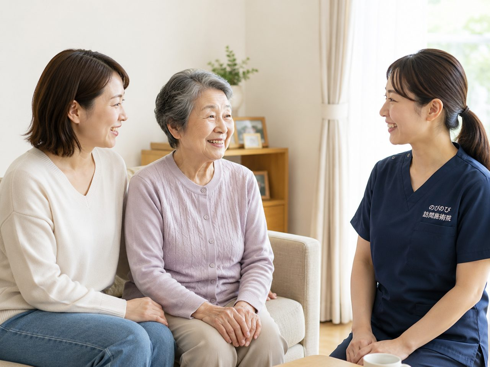

首や肩のこり、腕のしびれがずっと抜けない。外に出て通院するのがつらくなってきた、大阪市北区でそんな状況にお心当たりのある方へ。この記事は、通院が難しくなった在宅の方のご自宅に国家資格を持つ施術者が伺い、医師の同意にもとづく医療保険で受ける訪問鍼灸マッサージについてまとめました。対応エリア、多いご相談、費用、始めるまでの流れを順に紹介します。
この記事のポイント
保険はすべて鍼灸（はり・きゅう）で算定し、医師が必要と認めた慢性的な首肩こり・腰痛・膝の痛み・神経痛などが対象です。負担いただくのは1回の総額3,950円のうち割合分だけで、1割の方で約395円。この費用は医療保険で計算し、介護保険の区分支給限度額とは別枠なので、他の介護サービスと併用しても限度額を圧迫しません。要介護認定がなくても、医師の同意書があれば始められます。効果の感じ方には個人差があります。
梅田から中之島まで、北区のどこへでも伺います
大阪市北区は、梅田や大阪駅まわりの繁華街から、中之島のオフィス街、そして天満・南森町・扇町・中崎町といった下町情緒の残る住宅地まで、表情がめまぐるしく変わる街です。のびのび訪問施術院では、こうした北区のご自宅へ施術者が直接お伺いし、通院がむずかしい方のお身体をみさせていただいています。天神橋筋六丁目のマンションでも、大淀や豊崎の一戸建てでも、長柄・国分寺・本庄あたりの静かな路地裏でも、区内であればどこでも同じように足を運びます。
「うちの地域は来てもらえるのかな」と迷われる方も多いのですが、北区であれば基本的にご対応できます。隣接する都島区や淀川区へも伺います。一覧にない地域も状況によって伺えることがありますので、詳しくは対応エリアはどこまで来てもらえる？のページで確認していただけます。
北区で「訪問マッサージ」をお探しの方へ
「北区 訪問マッサージ」という言葉で探して来られる方が多いのですが、在宅で受ける施術は制度のうえで二つに分かれています。はり・きゅうの療養費と、あん摩マッサージ指圧の療養費です。前者は神経痛や腰痛症など慢性的な痛みについて、後者は麻痺や関節の動かしにくさなどについて、それぞれ医師が施術を必要と認めた場合が対象になります。のびのび訪問施術院は、はり・きゅうを施術のベースにしていて、保険はすべて鍼灸で算定します。
当院ははり・きゅうを軸に、その日の状態に応じて手技やストレッチ、身体を動かす運動なども組み合わせています。ちがいは「訪問マッサージと訪問鍼灸の違い」で詳しくご紹介しています。北区は梅田、中之島、天満、天神橋筋、中崎町のあたりまで伺います。
北区で多いご相談と、鍼灸マッサージができること
ご相談で多いのは、長年つき合ってこられた腰の痛みや、肩から腕にかけての重だるさ、なかなか上がらなくなった肩まわりのつらさです。医療保険のはり・きゅうは、神経痛・リウマチ・頸肩腕症候群・五十肩・腰痛症・頸椎捻挫後遺症という6つの症状が対象になっており、こうしたお悩みを抱えた方が保険を使いながら継続されています。
ただ、鍼灸やマッサージは病気そのものを治すものではありません。あくまで痛みやこわばりをやわらげ、日々を少し過ごしやすくするためのお手伝いです。効き方には個人差があり、その日の体調や症状の経過によっても感じ方は変わります。そのため、お一人おひとりのペースに合わせて、無理をしない形で続けていただくことを大切にしています。
医療保険と同意書、始めるための仕組み
訪問鍼灸マッサージを医療保険（療養費）で受けるには、かかりつけの先生に書いていただく同意書が必要になります。北区にはクリニックも多く、ふだん通っている先生にお願いできるケースがほとんどです。書類の準備が不安な方には、こちらから流れをご説明しながら進めますので、はじめての方でもご安心ください。
よく誤解されるのですが、この仕組みを利用するのに要介護認定は必要ありません。介護保険のサービスをまだ使っていない方でも、医師の同意さえあれば始められます。
料金は総額3,950円、負担は割合の分だけ
1回あたりの総額は3,950円で、そのうちご負担いただくのは保険の負担割合に応じた分だけです。1割の方なら約395円が目安になります。たとえば週2回のペースで受けられる1割の方なら、ひと月あたり約3,160円ほど。北区のように移動距離のある街でも、エリア内は出張費や交通費を別にいただくことはなく、どこでも料金は一律です。
負担割合ごとの計算や医療保険の考え方については、料金はいくら？医療保険の自己負担額と仕組みのページでくわしくまとめています。数字の内訳を落ち着いて見ておきたい方は、あわせて目を通していただくと安心です。
タワーマンションやオートロックのお住まいにも
梅田や中之島の周辺には高層のタワーマンションや集合住宅が立ち並び、オートロックのエントランスも当たり前になっています。施術者はこうした都心のお住まいへの訪問にも慣れていますので、インターホンでのやりとりや共用部の動線に戸惑うことはありません。高齢者向けの住宅や施設にお住まいの方のところへも、変わらずお伺いしています。
ご家族が離れて暮らしていて立ち会えない場合でも、施術後の様子をお伝えしながら進めますので、遠方のご家族にも状況が伝わるよう心がけています。
介護保険との併用と、機能訓練について
この施術は医療保険で計算するため、介護保険の区分支給限度額とは別の枠になります。デイサービスやヘルパーなどをすでに利用されている方でも、限度額を圧迫せずに併用していただけます。関節を動かしたり筋力の衰えをおさえたりする機能訓練も、鍼灸に加えるケアとして行っています。これらに追加の料金はかかりません。
一点だけご注意いただきたいのが、同じ部位について医療保険のリハビリと鍼灸を同じ月に同時に算定することはできない、という決まりです。すでに医療機関でリハビリを受けている方は、部位の重なりを確認しながらご案内しますので、遠慮なくご相談ください。
よくある質問
北区内ならどこでも来てもらえますか？
区内は全域で対応しています。天満・南森町・中崎町・天神橋筋・扇町のあたりから、中津・大淀の方面まで、区境のお宅も承っています。まずはお住まいの地域やマンション名を教えてください。伺える範囲かをその場でお答えします。
首や肩のこりでも保険の対象になりますか？
首や肩のこりそのものではなく、頸肩腕症候群や神経痛など、医師が鍼やお灸での治療を必要と認めた病名に対して保険が使えます。首から腕にかけてのしびれや痛みでお困りなら、かかりつけの先生か当院にご相談ください。対象になるかを一緒に確かめます。
要介護認定を受けていなくても利用できますか？
利用できます。訪問鍼灸マッサージは介護保険ではなく医療保険のケアなので、認定の有無は問いません。必要なのはかかりつけ医の同意書だけで、医師が治療を必要と認めれば保険で施術を受けられます。
北区での費用はどのくらいですか？
1回の総額は3,950円で、お支払いは負担割合の分だけです。1割の方で約395円が目安です。別途の出張費はかからず、区内はどこでも同額。お支払いは月ごとにまとめてお願いしています。
介護保険の限度額がいっぱいでも使えますか？
使えます。この費用は医療保険で計算するため、介護保険の区分支給限度額とは別の枠で扱われます。デイサービスやヘルパー、福祉用具のレンタルで限度額に近い方でも、その枠とは別に鍼灸のケアを続けられます。
オートロックのマンションでも来てもらえますか？
はい、都心の集合住宅やタワーマンションにも伺います。管理人への連絡や入館の段取りは、事前に相談しながら整えて進めますので、落ち着いてご利用いただけます。有料老人ホームやサービス付き高齢者向け住宅にお住まいの方にも対応しています。
医師の同意書はどうやって用意すればいいですか？
保険を使うには医師の同意書が必要です。北区のかかりつけ医にお願いでき、書類のやりとりや段取りは当院が引き受けます。かかりつけ医がいない場合も、まずはご相談ください。進め方を、ご希望をうかがいながら決めます。
仕事帰りの家族が立ち会えなくても大丈夫ですか？
大丈夫です。施術のたびに首や肩の様子や体調の変化を記録し、電話や報告書でご家族にお伝えします。担当のケアマネジャーや施設のご担当者とも連絡を取り合えます。立ち会いなしでの進め方もご相談いただけます。
土日に来てもらえますか？
土曜・日曜・祝日はお休みをいただいています。うかがえるのは平日の9時から18時までです。ご家族が立ち会えない日に、ご本人おひとりで受けておられる方も多くいらっしゃいます。初回だけ立ち会っていただけると、目標やご希望をうかがいやすくなります。